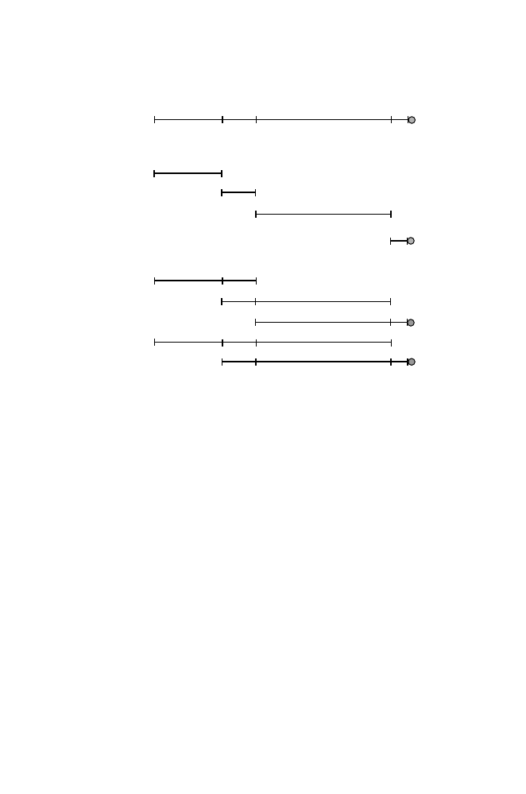

4.4 Experimental Approaches to Restriction Mapping
107
4
2
8
1
4
2
8
1
4
2
2
8
8
1
4
2
8
2
8
1
Undigested
Completely digested
Incompletely digested
D
A
B
C
Fig. 4.1.
Using incomplete digestion as an aid to restriction mapping. The molecule
to be mapped is labeled at one end (filled circle) with a radioisotope. By autoradiog-
raphy or the use of a phosphorimager, only radioactively labeled fragments (A, B, C,
and D) will be detected after resolution by gel electrophoresis. The size increments
separating each successive fragment starting with the end fragment correspond to
the distance to the next restriction site.
The experimental “trick” (Smith and Birnstiel, 1976) is to radioactively label
(directly or indirectly) one end of the molecule. In Fig. 4.1, the filled circle
marks the labeled end fragment.
The mixture of completely and incompletely digested products can be
resolved electrophoretically, and the sizes of the radioactive fragments can
be measured (for example, after autoradiography of the dried gel or using
a Southern blot, or with the help of a phosphorimager). Scoring only the
labeled fragments (only they appear on the autoradiogram) eliminates the
background of incomplete digestion products that do not include the indicated
end fragment. Now we list the labeled fragments in order of size:
0
1
9
11
15
This includes the map of restriction site positions measured from the
right end!
In what was then an experimental tour de force, Kohara et al. (1987)
applied this approach for constructing a restriction map of the
E. coli
genome
for several different restriction enzymes. They mapped clones in a lambda